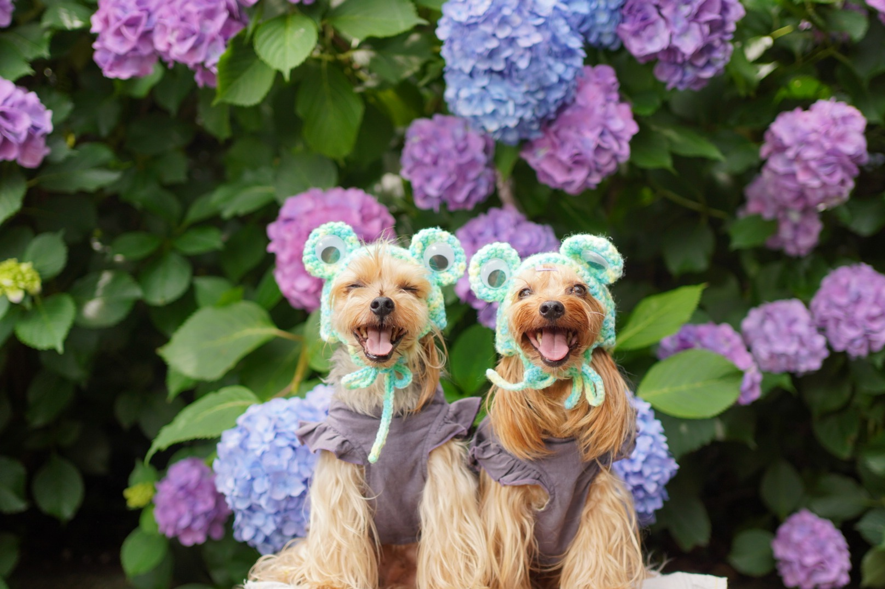
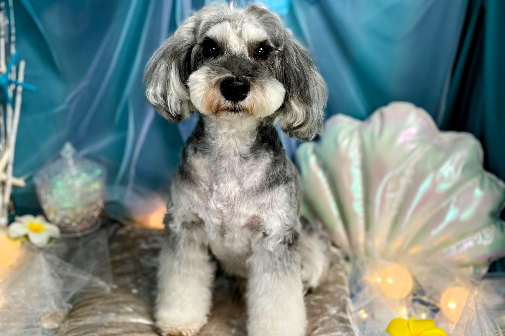
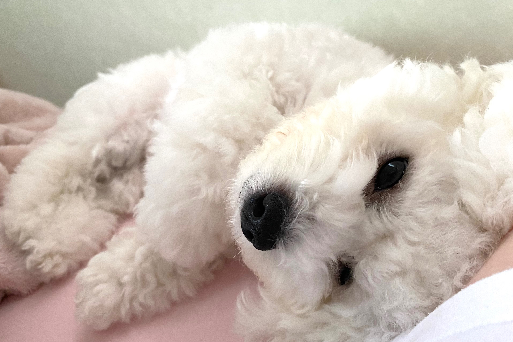
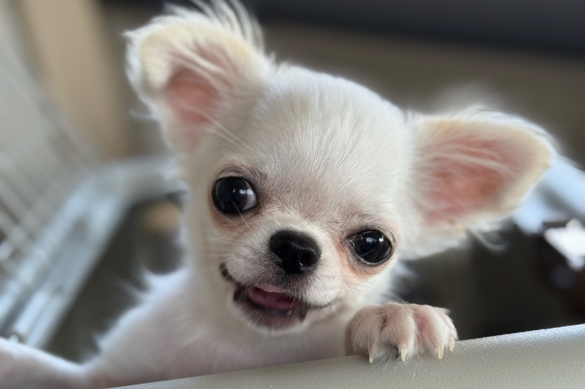
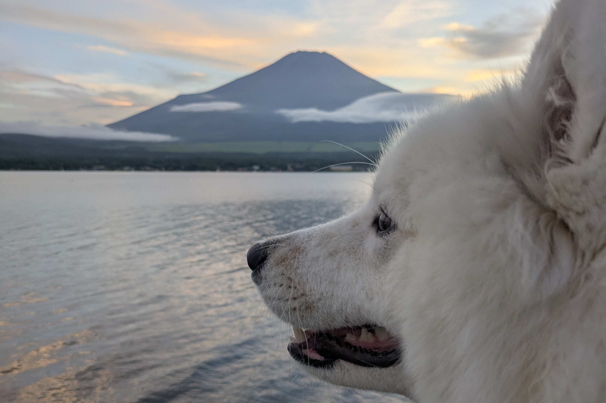
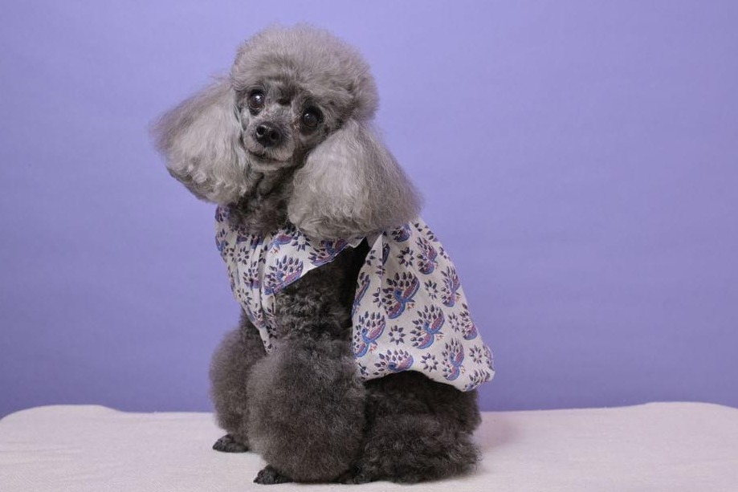
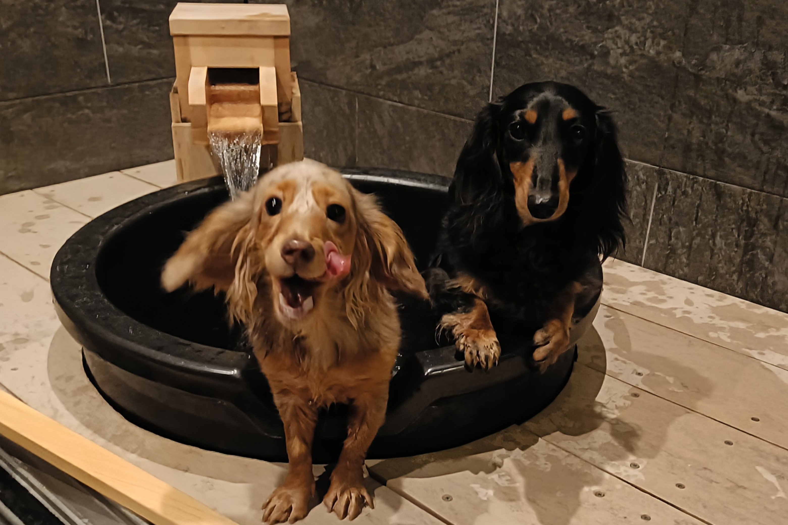
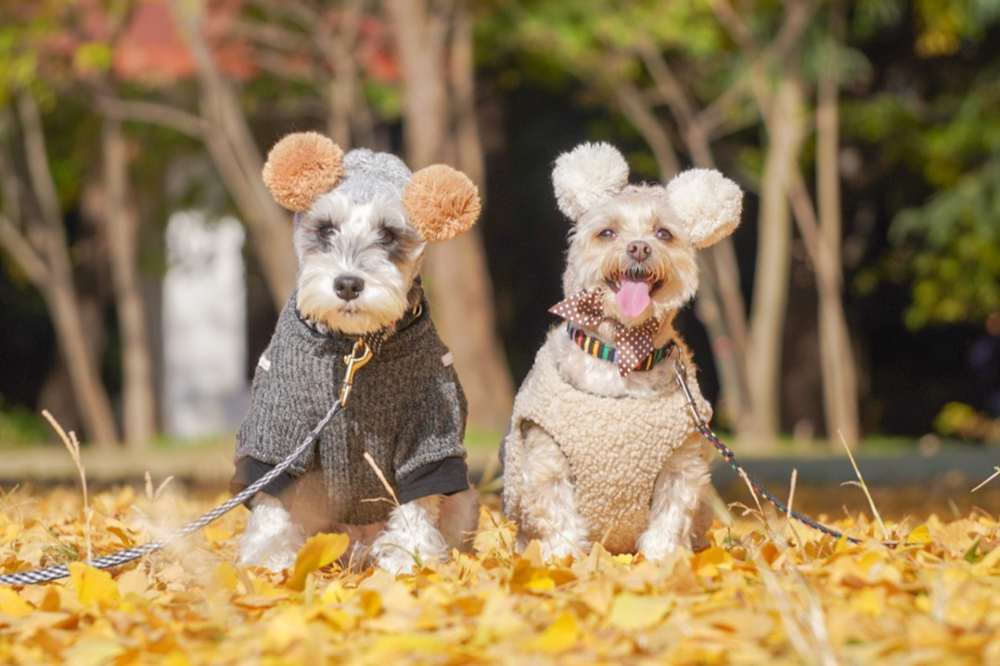
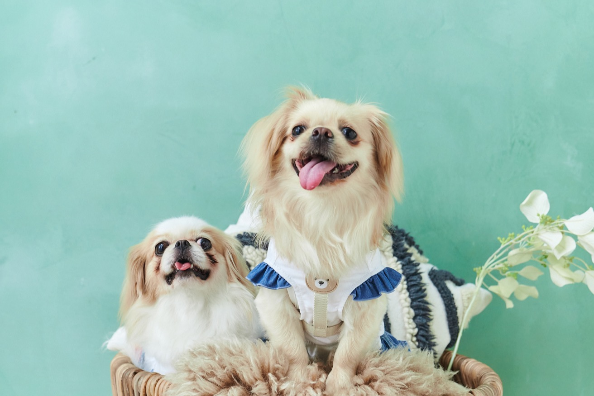
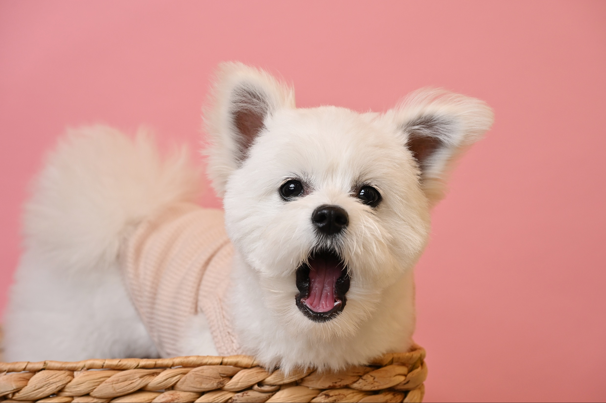

LuckLick 4th Anniversary
フォトコンテスト
Smile!
うちの子の笑顔が、
誰かの笑顔につながります。
ABOUT
今年のテーマは
「Smile!」
3周年の際に初めて開催したLuckLickフォトコンテスト。 大好評につき、今年も開催が決定しました！
今年からはテーマを設定。テーマは「Smile!」。 ニヤッとした笑顔、満面の笑顔、飼い主様にしか見せない素敵な笑顔の瞬間を大募集いたします！
2025 PHOTO CONTEST
昨年の応募作品
昨年もたくさんの素敵なお写真をご応募いただきました。 今年も、わんちゃんたちのとっておきの表情をお待ちしています。










SCHEDULE
応募・発表について
2026.7/1 - 7/31 23:59
2026.8/7 - 8/9
LuckLick 4周年イベントにて店舗掲示
2026年8月中旬予定
VOTE
来場者投票で
入選作品を選定
応募された作品は、8月7日～9日に店舗にて開催される LuckLick 4周年イベントにて掲示されます。
ご来場いただいた皆さまの投票によって、入選作品を選定します！
AWARD
賞について
上位10作品
シカマキ写真館様による選定 1作品
LuckLickスタッフによる選定 1作品
SPECIAL JUDGE
特別審査員
CHARITY CALENDAR
2027年度
チャリティーカレンダー制作
来場者投票による上位10作品、特別審査員賞・スタッフ賞各1作品、 合計12作品を選定し、2027年度のチャリティーカレンダーを制作します！
去年に引き続き、選ばれた作品だけでなく、 応募していただいたすべてのお写真がカレンダーの一部に使用されます。
チャリティーカレンダーの売上は、保護団体さんに寄付させていただきます。
HOW TO ENTRY
参加方法
-
01
LuckLick公式Instagramをフォロー
Instagramを開く -
02
下記の応募フォームからお写真を投稿
-
03
「#LuckLick4周年フォトコンテスト」をつけて、 LuckLick公式アカウントをタグ付けまたはメンションしてInstagramに投稿
-
04
LuckLick公式アカウントから「いいね」が来たら応募完了！
ENTRY FORM
応募フォーム
ご応募ありがとうございました！
応募完了まであと一歩です。
Instagramへの投稿をお願いします。
- 応募したお写真をInstagramに投稿
- 「#LuckLick4周年フォトコンテスト」をつける
- LuckLick公式アカウントをタグ付け、またはメンション
LuckLick公式アカウントから「いいね」が届いたら応募完了です！
Instagramを開く